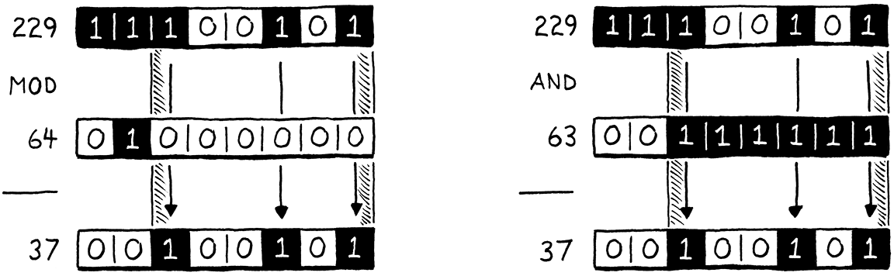
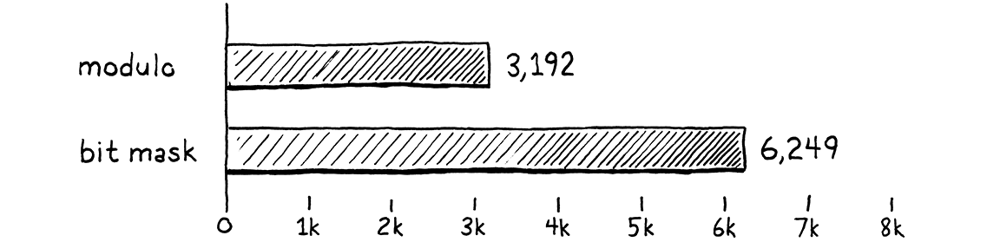
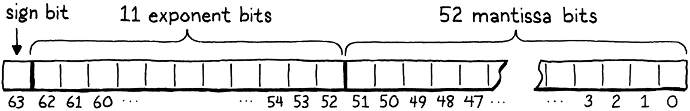
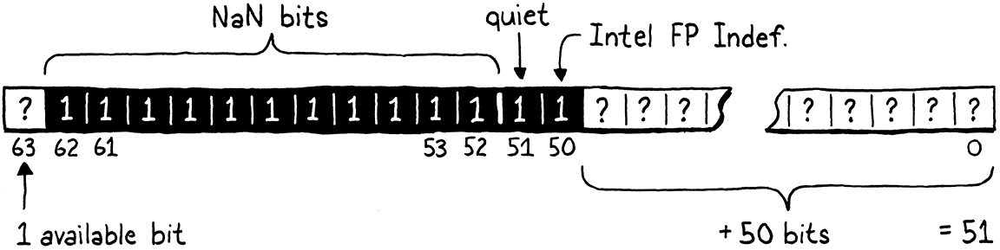
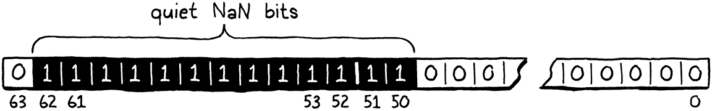
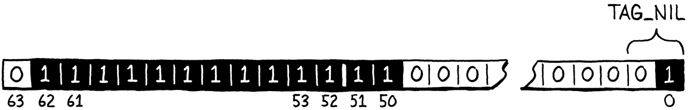
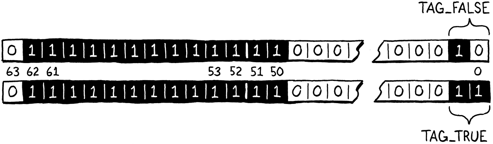
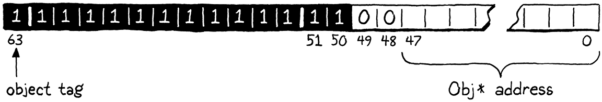

优化
一天里最好的时段是傍晚。你已经把一天的活儿干完了。现在可以把脚翘起来，好好享受。
石黑一雄，《长日将尽》
如果我还住在新奥尔良，我会把这一章叫作一份 lagniappe——那是当地的说法，指白送给顾客的 一点额外小东西。你手上已经有了一整本书和一台完整的虚拟机了，但我还想让你在 clox 上多玩一会儿。 这一回我们奔着纯粹的性能去。我们会给虚拟机施加两种很不一样的优化。在这个过程中，你会摸到 怎么度量、怎么改进一个语言实现的性能——其实任何程序都适用。
30 . 1度量性能
优化的意思是：拿一个能跑的应用，让它跑得更好。优化过的程序做的是同一件事，只是花的资源更少。 优化时我们通常想到的资源是运行速度，但减少内存占用、启动时间、持久化存储体积或者网络带宽， 也可能同样重要。所有物理资源都是要付代价的——哪怕这个代价主要体现为浪费掉的人力时间—— 所以优化工作往往划算。
计算机的早期有那么一段时间，一个熟练的程序员能把整个硬件架构和编译流水线装在脑子里， 仅凭冥思苦想就理解一个程序的性能。那些日子早过去了，中间隔着微码、缓存行、分支预测、 深邃的编译流水线，以及庞然大物般的指令集。我们喜欢假装 C 是一门「底层」语言，但从
printf("Hello, world!");
到屏幕上出现一句问候，这中间的技术栈如今高得吓人。
如今优化是一门实验科学。我们的程序是一只正在硬件障碍赛道上冲刺的边境牧羊犬。如果我们想让她 更快冲到终点，我们不能光坐着琢磨犬类生理学、一直琢磨到某天灵光乍现。我们得观察她的表现， 看出她在哪儿绊了跟头，然后替她找出更快的路可走。
就像敏捷训练是针对某一条狗、某一条赛道专属的一样，我们不能假定对虚拟机的优化能让所有 Lox 程序在所有硬件上都跑得更快。不同的 Lox 程序施压的是虚拟机的不同部位，不同的架构也各有 自己的长处和短处。
30 . 1 . 1基准测试
加新功能时，我们靠写测试来验证正确性——写一些用到某项特性、并检验虚拟机行为的 Lox 程序。 测试把语义钉死，也保证我们加新特性时不会弄坏已有的东西。在性能上我们有类似的需求：
-
我们怎么验证一项优化确实提升了性能，而且提升了多少？
-
我们怎么保证其他不相干的改动不会让性能退化？
为了达成这两个目标而写的 Lox 程序，就叫基准测试。它们是精心设计出来的程序，专门给语言 实现的某个部分加压。它们衡量的不是程序做了什么，而是做这件事花了多久。
在一次改动前后各测一次基准测试的性能，你就能看出这次改动干了什么。当一项优化落地时， 所有测试的行为都应该和之前一模一样，只是希望基准测试跑得更快了。
一旦你有了整整一一套基准测试，你测出来的就不只是某项优化有没有改变 性能，而是它改变的是哪类代码的性能。你常常会发现有些基准测试变快了，另一些却变慢了。 这时你就得为「你的语言实现要优化哪一类代码」做出艰难的决定。
你选择去写哪一套基准测试，正是这个决定的关键部分。就跟你的测试编码了「正确行为该是什么样」 一样，你的基准测试是你在性能问题上优先级的化身。它们会指引你去实现哪些优化，所以挑基准测试 时要小心，别忘了时不时回头想想：它们是在帮你逼近更大的目标，还是在拖后腿。
做基准测试是一门微妙的手艺。和写测试一样，你得在两件事之间取得平衡：既不能对你的实现 过拟合，又要确保这个基准测试真的戳中了你关心的那些代码路径。测性能时，你还得补偿掉 CPU 降频、 缓存，以及其他各种古怪的硬件和操作系统特性带来的方差。我不打算在这里把整套方法都教给你， 但请把做基准测试当成一门单独的技能来练，它会随着练习越来越熟。
30 . 1 . 2性能分析
好，假设你现在手上有几个基准测试了。你想让它们更快。然后呢？首先，我们假定那些显而易见的、 容易的活儿你都干完了。你在用正确的算法和数据结构——或者至少，你没有在用那些错得离谱的。 在我看来，把线性搜索一个巨大的无序数组换成哈希表，与其说是「优化」，不如说是「良好的软件工程」。
由于硬件太复杂，没法从第一性原理推演我们程序的性能，我们只能到现场去。这叫性能分析。 性能分析器——如果你从没用过的话——是一个运行你的程序、并 在代码执行过程中跟踪硬件资源使用情况的工具。简单的会告诉你程序的每个函数各花了多少时间。 高级的会记录数据缓存未命中、指令缓存未命中、分支预测错误、内存分配，以及各种其他指标。
针对各种操作系统和语言，市面上有很多性能分析器。不管你在哪个平台上写代码，都值得去熟悉一个 像样的分析器。你不需要成为大师。我有过这种经历：把一个程序扔给性能分析器，几分钟里学到的东西， 换作自己靠试错摸索，得花上好几天。性能分析器是了不起的神奇工具。
30 . 2更快的哈希表探测
高谈阔论够多了，我们来把性能图表整起来，让它们往右上方蹿。我们要做的第一个优化，结果证明， 是对虚拟机能做的最小改动。
我当初把 clox 的前身——那台字节码虚拟机——跑通的时候，做了任何有自尊的虚拟机黑客都会做的事。 我东拼西凑搞出两个基准测试，打开性能分析器，把那些脚本在我的解释器里跑了一遍。在 Lox 这样的 动态类型语言里，用户代码有很大一部分是字段访问和方法调用，所以我的一个基准测试大概长这样：
class Zoo { init() { this.aardvark = 1; this.baboon = 1; this.cat = 1; this.donkey = 1; this.elephant = 1; this.fox = 1; } ant() { return this.aardvark; } banana() { return this.baboon; } tuna() { return this.cat; } hay() { return this.donkey; } grass() { return this.elephant; } mouse() { return this.fox; } } var zoo = Zoo(); var sum = 0; var start = clock(); while (sum < 100000000) { sum = sum + zoo.ant() + zoo.banana() + zoo.tuna() + zoo.hay() + zoo.grass() + zoo.mouse(); } print clock() - start; print sum;
如果你以前从没见过基准测试，这段代码可能看着荒谬。到底在干什么？程序本身并不想干 任何有用的事。它真正干的是调用一堆方法、访问一堆字段，因为这才是我们感兴趣的语言部分。字段和 方法住在哈希表里，所以它要费点心思，至少往这些表里塞上几个有意思的 键。这一切还裹在一个大循环里，好让我们的性能分析器有足够的执行时间去刨，找出那些时钟都花去了哪里。
在我告诉你性能分析器显示了什么之前，先花一分钟猜几个。你觉得 clox 代码库里的哪个函数占掉了 虚拟机最多时间？前面几章里我们写过的代码里，有没有哪一块你怀疑特别慢？
我发现的是：不出所料，包含时间最多的函数当然是 run()。（包含时间是指在某个函数以及它调用的
所有其他函数上花掉的总时间——从进入这个函数到它返回之间的总时间。）既然 run() 是执行字节码的
主循环，一切都由它驱动。
在 run() 内部，字节码 switch 里那些常见指令（OP_POP、OP_RETURN、OP_ADD 等）的各个
分支中，散落着一小段一小段的时间。真正的大头是 OP_GET_GLOBAL，占 17% 的执行时间；
OP_GET_PROPERTY 占 12%；而 OP_INVOKE 拿走了执行时间的整整 42%。
那么，我们有三个热点可以优化？其实不是。因为结果是，那三条指令几乎把所有时间都花在了对同一个
函数的调用里：tableGet()。这个函数一口吞掉了 72% 的执行时间（同样是包含时间）。在一门动态
类型语言里，我们本来就预期会有相当一部分时间花在哈希表查找上——这算是动态性的入场券。但话
说回来，哇。
30 . 2 . 1拖慢速度的键回绕
你去看一眼 tableGet()，会发现它基本上就是对 findEntry() 一次调用的包装，真正的哈希表查找
就在那儿发生。帮你回忆一下，完整代码是这样的：
static Entry* findEntry(Entry* entries, int capacity, ObjString* key) { uint32_t index = key->hash % capacity; Entry* tombstone = NULL; for (;;) { Entry* entry = &entries[index]; if (entry->key == NULL) { if (IS_NIL(entry->value)) { // Empty entry. return tombstone != NULL ? tombstone : entry; } else { // We found a tombstone. if (tombstone == NULL) tombstone = entry; } } else if (entry->key == key) { // We found the key. return entry; } index = (index + 1) % capacity; } }
跑前面那个基准测试时——至少在我的机器上——虚拟机把总执行时间的 70% 花在了这个函数里的 一行上。猜猜是哪一行？猜不到？就是这行：
uint32_t index = key->hash % capacity;
那次指针解引不是问题。问题是那个小小的 %。事实证明，取模运算符真的很慢。比别的
算术运算符慢得多。我们能不能想个更好的办法？
在一般情况下，你很难用用户代码重新实现一个基本算术运算符，还比 CPU 自己做的更快。毕竟，我们的 C 代码最终也是编译成 CPU 自己的算术指令的。如果真有什么取巧的办法，芯片早就用了。
不过，我们可以利用一个事实：我们对自己的问题了解得比 CPU 多。这里的取模是用来拿一个键字符串的 哈希码回绕进表的条目数组范围内。那个数组起始有八个元素，每次翻一倍增长。我们知道——而 CPU 和 C 编译器不知道——我们表的大小永远是 2 的幂。
因为我们都是些成天玩位的老手，知道算「一个数对 2 的幂取模」有个更快的办法：位掩码。 假设我们想算 229 对 64 取模。答案是 37，用十进制写并不那么显而易见，但把这两个数看成二进制 就清楚多了：

看图的左边，注意结果（37）其实就是被除数（229）把最高两位削掉之后剩下的东西？那最高两位，就是 除数里那个唯一的 1 以及它左边的位。
在右边，我们把 229 和 63 做按位 AND，得到同样的结果；63 比我们 原本那个 2 的幂的除数小一。一个 2 的幂减一，得到的正是一串全 1 的位。那恰好就是我们要的掩码， 用来剔掉左边那两位。
换句话说，要算一个数对任意 2 的幂的模，只要把它和「那个 2 的幂减一」做按位 AND 就行。我的数学不够好，没法证明给你看这为什么成立，但你顺着 想一想，它应该说得通。我们可以把那个慢吞吞的取模运算符，换成一次极快的减一加按位 AND。我们只要把那行肇事的代码改成这样：
static Entry* findEntry(Entry* entries, int capacity,
ObjString* key) {
在 findEntry() 内
替换 1 行
uint32_t index = key->hash & (capacity - 1);
Entry* tombstone = NULL;
CPU 可喜欢按位运算符了，所以想在这个基础上再改进，可不容易。
我们的线性探测搜索可能需要从数组末尾绕回来，所以 findEntry() 里还有另一个取模要更新。
// 找到了这个键。
return entry;
}
在 findEntry() 内
替换 1 行
index = (index + 1) & (capacity - 1);
}
这一行没在性能分析器里露面，因为大多数搜索并不会绕回。
findEntry() 函数还有个姐妹函数 tableFindString()，负责为字符串驻留做哈希表查找。我们不妨
把同样的优化也用到那儿。这个函数只在驻留字符串时才会被调用，而我们的基准测试并没有对它施压。
但一个会创建大量字符串的 Lox 程序，可能会明显从这项改动里受益。
if (table->count == 0) return NULL;
在 tableFindString() 内
替换 1 行
uint32_t index = hash & (table->capacity - 1);
for (;;) {
Entry* entry = &table->entries[index];
线性探测绕回来时也是同样这句。
return entry->key;
}
在 tableFindString() 内
替换 1 行
index = (index + 1) & (table->capacity - 1);
}
来看看我们的改动值不值。我把那个动物园基准测试改成统计：十秒钟里它能跑多少批 一万次调用。批数越多，性能越好。在我机器上，用未优化的代码，这个基准测试能跑完 3,192 批； 做完这项优化，跳到了 6,249 批。

这几乎正好是在同样的时间里多干了一倍的活儿。我们让虚拟机快了一倍（照例的免责声明：就这项基准 测试而言）。放到优化这事儿上，这是个巨大的胜利。通常你能在这儿抠出几个百分点就已经很高兴了。 而由于方法、字段和全局变量在 Lox 程序里如此常见，这一个微小的优化在各方面都提升了性能。 几乎每个 Lox 程序都受益。
那么，这一节的要点不是取模运算符坏透了、你该把它从今后写的每一个程序里都斩草除根。 也不是说微优化是一项必备的工程技能。性能问题很少有这么窄、这么有效的解法。我们只是走运。
要点在于：要不是性能分析器告诉我们，我们不知道取模运算符是个性能出血点。如果当初我们在 虚拟机的代码库里瞎转悠、瞎猜哪儿是热点，很可能根本注意不到它。我希望你从这里带走的是： 你的工具箱里有一个性能分析器，是多么重要。
为了把这一点说透，我们干脆在优化过的虚拟机上再跑一遍原来那个基准测试，看性能分析器给我们显示
什么。在我机器上，tableGet() 仍然占着一块不小的执行时间。这在一门动态类型语言里是意料之中的。
但它已经从总执行时间的 72% 降到了 35%。这就和我们希望看到的差不多了，而且说明我们的优化不只是
让程序更快，还让它以我们预期的方式更快。性能分析器用来验证解决方案，和用来发现问题一样有用。
30 . 3NaN 装箱
接下来这项优化的味道很不一样。谢天谢地，尽管名字古怪，它并不涉及揍你的祖母。它是不一样， 但也没那么不一样。在上一个优化里，是性能分析器告诉我们问题出在哪，我们只要动点脑子就能想出 解法。
这项优化更微妙，它对性能的影响也更分散地落在整个虚拟机各处。性能分析器帮不上我们这个忙。 发明它的是某个人，他对机器体系结构最底层的那一层思考得很深。
就像标题说的，这项优化叫 NaN 装箱，有时也叫 NaN 标记。我个人更喜欢后面那个名字，因为 「装箱」往往暗示某种堆上分配的表示，而前面那个似乎是更通用的术语。这项技术改变的是我们在 虚拟机里表示值的方式。
在 64 位机器上，我们的 Value 类型占 16 字节。这个结构体有两个字段：一个类型标签，和一个装载荷的 联合体。联合体里最大的字段是一个 Obj 指针和一个 double，都是 8 字节。为了让联合体字段对齐到 8 字节边界，编译器在标签后面也加了填充：
这可挺大。如果我们能把它缩小，虚拟机就能在同样多的内存里塞进更多的值。如今大多数计算机都有 充足的内存，所以直接省下的内存并不是大事。但更小的表示意味着一条缓存行里能装下更多的 Value。 这意味着更少的缓存未命中，而这会影响速度。
如果 Value 需要按它最大的载荷大小来对齐，而一个 Lox 数字或 Obj 指针要占满 8 字节，我们怎么可能 把它缩小？在 Lox 这样的动态类型语言里，每个值不光要带着自己的载荷，还要带着足够的额外信息， 好让运行时在运行期确定它的类型。如果一个 Lox 数字已经用满了那 8 字节，我们还能把哪几个额外的位 藏在哪儿，好告诉运行时「这是个数字」？
这是动态语言黑客的老大难问题。它特别折磨人，是因为静态类型语言一般没这个问题。每个值的类型 在编译期就已知，运行时不需要额外的内存去记录。你的 C 编译器编译一个 32 位 int 时，得到的变量 拿到的存储空间是恰好 32 位。
动态语言的人不甘心在静态派面前丢地盘，所以他们想出了若干非常聪明的办法，把类型信息和载荷一起塞进 很少的几个位里。NaN 装箱就是其中之一。它特别适合 JavaScript 和 Lua 这样的语言——那里所有数字 都是双精度浮点数。Lox 也在同一艘船上。
30 . 3 . 1什么才算（不算）是一个数？
开始优化之前，我们需要真正理解我们那位朋友 CPU 是怎么表示浮点数的。今天几乎所有机器用的都是 同一套方案，它写在那部德高望重的法典 IEEE 754 里，凡人管它叫「IEEE 浮点运算标准」。
在你计算机的眼里，一个 64 位、双精度、IEEE 浮点数长这样：

-
从右边数起，前 52 位是小数部分、尾数、或者说有效数位。它们以二进制整数的形式 表示这个数的有效数字。
-
紧挨着的是 11 个指数位。它们告诉你尾数被挪得离小数点（准确地说是二进制点）有多远。
-
最高位是符号位，它表示这个数是正还是负。
我知道这说得有点含糊，但这一章不是要深入探讨浮点表示。想了解指数和尾数怎么配合的，外面已经有 比我能写得更好的讲解。
对我们的目的来说，关键的部分是：规范为某种特殊的指数值留出了特例。当所有指数位都置位时，这个值 就不再表示一个特别大的数，而有了另一层含义。这些值是「非数」（所以叫 NaN）值。它们表示 无穷大、除以零的结果这类概念。
任何指数位全部置位的 double 都是 NaN，跟尾数位无关。这意味着 NaN 的位模式多得数不清， 而且彼此不同。IEEE 754 把它们分成两类：尾数最高位为 0 的值叫发信号 NaN（signalling NaN）， 其余的叫静默 NaN（quiet NaN）。发信号 NaN 的用意是标记出错的计算结果，比如除以零。芯片 可以在检测到这样一个值被产生时，彻底中止一个程序。你要是试图去读一个 发信号 NaN，它可能自毁。
静默 NaN 被设计成用起来更安全。它们不表示有用的数值，但至少你碰上它们时，它们不该把你的手烧伤。
每个指数位全部置位、尾数最高位也置位的 double，都是一个静默 NaN。这下就剩 52 个位没人认领。 我们会让掉其中一个，免得踩到英特尔那个「QNaN Floating-Point Indefinite」值，于是剩 51 位。 剩下这些位可以是任意值。我们正在谈的是 2,251,799,813,685,248 种独一无二的静默 NaN 位模式。

这意味着一个 64 位 double 除了能装下各种不同的数值型浮点数，还能再装下 51 位我们想怎么用
就怎么用的数据。这地方够宽裕，够我们留出几个位模式来表示 Lox 的 nil、true 和 false。
那 Obj 指针呢？指针不是也要占满 64 位吗？
幸好我们另一只袖子里还藏着一个花招。是的，从技术上讲，64 位架构上的指针就是 64 位。但据我所知， 没有任何一种架构真的用满了整个地址空间。相反，如今最常用的芯片往往只用到低 48 位。 剩下那 16 位要么未定义，要么恒为零。
既然有 51 位，我们就能塞进一个 48 位指针，还剩下三个位富余。这三个位刚好够存一点小小的类型标签，
用来区分 nil、布尔值和 Obj 指针。
这就是 NaN 装箱。在一个 64 位 double 内部，你可以装下所有不同的浮点数值、一个指针，或者另外几个 特殊哨兵值中的任何一个。内存占用只有我们当前 Value 结构体的一半，保真度却一点不丢。
这种表示特别妙的地方在于，我们根本不需要把一个数值 double 转换成「装箱」形式。Lox 数字 就是普通的 64 位 double。因为 Lox 是动态类型的，我们用它们之前还是得检查类型，但从 「值」到「数字」这一步，我们不需要做任何移位或指针间接寻址。
当然，对其他值类型来说还是有个转换步骤。不过幸好，从值到原始类型的整套机制，我们的虚拟机都藏在 一小撮宏后面。把这些宏改写成 NaN 装箱的实现，虚拟机的其余部分就该照样跑起来了。
30 . 3 . 2条件编译支持
我知道这种新表示的细节在你脑子里还没成型。别担心，随着我们一路做下去，它们会慢慢清晰起来。在 动手之前，我们要先搭一些编译期的脚手架。
在上一个优化里，我们把原来慢的代码重写一遍，就算完事。这一个稍微有点不一样。NaN 装箱依赖 芯片表示浮点数和指针的一些非常底层的细节。它在你可能遇到的绝大多数 CPU 上大概都能用， 但你永远没法百分之百确定。
要是因为值的表示问题，我们的虚拟机就整个儿失去了对某种架构的支持，那可太难受了。为避免这一点， 我们会同时维护对 Value 的旧带标签联合体表示和新 NaN 装箱表示的支持。用下面这个编译开关来 选择用哪种表示：
#include <stdint.h>
#define NAN_BOXING
#define DEBUG_PRINT_CODE
如果它被定义，虚拟机就用新形式；否则退回旧风格。那几处关心值表示细节的代码——主要是负责包装 和解包 Value 的那几个宏——会根据这个开关而不同。虚拟机的其余部分可以继续乐呵呵地往前走。
大部分工作发生在「value」模块里，我们在那里为新类型加一节。
typedef struct ObjString ObjString;
#ifdef NAN_BOXING typedef uint64_t Value; #else
typedef enum {
启用 NaN 装箱后，Value 的实际类型是一个扁平的、无符号的 64 位整数。我们本可以用 double， 那样处理 Lox 数字的宏会稍微简单一点。但其他所有宏都需要做位运算，而 uint64_t 对此友好得多。 在这个模块之外，虚拟机的其余部分其实无所谓。
在我们重新实现那些宏之前，先把旧表示定义末尾那个 #ifdef 的 #else 分支合上。
#define OBJ_VAL(object) ((Value){VAL_OBJ, {.obj = (Obj*)object}})
#endif
typedef struct {
剩下的任务很简单：把 #else 那边的所有东西，在第一个 #ifdef 段落里用新实现填一遍。我们一个
值类型一个值类型地来，从最容易的开始。
30 . 3 . 3数字
我们从数字开始，因为在 NaN 装箱下它的表示最直接。要把一个 C double「转换」成装箱后的 clox Value，我们一个位都不用动——表示完全一样。但我们确实得让我们的 C 编译器相信这件事，而我们 偏偏把 Value 定义成 uint64_t，把这件事弄得更难了。
我们需要让编译器把一组它认为是 double 的位，当成 uint64_t 用，反之亦然。这叫类型双关。 C 和 C++ 程序员从喇叭裤和八轨道磁带的年代起就在干这件事了，但两家语言规范都犹豫 着不肯说，这许多做法里究竟哪一种是官方认可的。
我知道有一种把 double 转成 Value 再转回来的办法，我相信 C 和 C++ 两边的规范都认可它。
遗憾的是，它塞不进单个表达式里，所以那些转换宏不得不回调辅助函数。这是第一个宏：
typedef uint64_t Value;
#define NUMBER_VAL(num) numToValue(num)
#else
那个宏把 double 传到这个函数：
#define NUMBER_VAL(num) numToValue(num)
static inline Value numToValue(double num) { Value value; memcpy(&value, &num, sizeof(double)); return value; }
我知道，很怪对吧？把一串字节当成另一种类型、而完全不改它们的值，办法居然是 memcpy()？
这看起来慢得可怕：新建一个局部变量，把它的地址通过一次系统调用交给操作系统去拷贝几个字节，
然后返回那个结果——它和输入是完全一样的几个字节。幸好，因为这个用法就是类型双关认可的
惯用法，大多数编译器认得这个模式，会把那个 memcpy() 整个优化掉。
「解包」一个 Lox 数字是镜像操作。
typedef uint64_t Value;
#define AS_NUMBER(value) valueToNum(value)
#define NUMBER_VAL(num) numToValue(num)
那个宏调用的是这个函数：
#define NUMBER_VAL(num) numToValue(num)
static inline double valueToNum(Value value) { double num; memcpy(&num, &value, sizeof(Value)); return num; }
static inline Value numToValue(double num) {
它的做法完全一样，只是把类型换了。同样，编译器会把这一切都消掉。即使那些 memcpy() 调用最后
会消失，我们还是得告诉编译器我们调的是哪一个 memcpy()，所以我们还需要一个 include。
#define clox_value_h
#include <string.h>
#include "common.h"
写了这么多代码，最终只为让 C 的类型检查器闭嘴。对一个 Lox 数字做运行期类型测试就有意思一点。 如果我们手上的正好是一个 double 的那些位，我们怎么知道它就是一个 double？该玩位了。
typedef uint64_t Value;
#define IS_NUMBER(value) (((value) & QNAN) != QNAN)
我们知道，任何不是数字的 Value 都会用一个特殊的静默 NaN 表示。而且我们认定自己已经正确地 避开了那些可能真的由数字做算术运算产生的、有意义的 NaN 表示。
如果一个 double 的所有 NaN 位都置位，再加上静默 NaN 位，再多加一个以防万一，我们就可以 相当有把握地说它是那些我们自己为其他类型预留的位模式之一。要验证 这一点，我们把所有位都掩掉，只留下我们那组静默 NaN 位。如果那些位全部置位，它就一定是某个 别的 Lox 类型的 NaN 装箱值。否则，它其实是个数字。
那组静默 NaN 位是这样声明的：
#ifdef NAN_BOXING
#define QNAN ((uint64_t)0x7ffc000000000000)
typedef uint64_t Value;
要是 C 支持二进制字面量就好了。不过你真去做那个转换，就会看到那个值和这个是一样的：

这正好是全部的指数位，加上静默 NaN 位，再加上多出来的那一位——用来躲开英特尔那个值。
30 . 3 . 4nil、true 和 false
下一个要处理的类型是 nil。这相当简单，因为只有一个 nil 值，所以我们只需要一个位模式来
表示它。还有另外两个单例值，也就是两个布尔值 true 和 false。加起来一共需要三个独一无二的
位模式。
两个位能给出四种不同组合，足够用了。我们把未用尾数空间里最低的两位认作「类型标签」，用来判断 我们面对的是这三个单例值里的哪一个。这三个类型标签这样定义：
#define QNAN ((uint64_t)0x7ffc000000000000)
#define TAG_NIL 1 // 01. #define TAG_FALSE 2 // 10. #define TAG_TRUE 3 // 11.
typedef uint64_t Value;
于是我们对 nil 的表示就是：定义我们静默 NaN 所需的全部位，外加 nil 的那些类型标签位：

在代码里，我们这样检查这些位：
#define AS_NUMBER(value) valueToNum(value)
#define NIL_VAL ((Value)(uint64_t)(QNAN | TAG_NIL))
#define NUMBER_VAL(num) numToValue(num)
我们只是把静默 NaN 位和类型标签做按位 OR，然后做一小套转换花招， 好让 C 编译器明白我们希望这些位是什么意思。
既然 nil 只有一种位表示，我们就可以在 uint64_t 上用相等来判断一个 Value 是不是 nil。
typedef uint64_t Value;
#define IS_NIL(value) ((value) == NIL_VAL)
#define IS_NUMBER(value) (((value) & QNAN) != QNAN)
true 和 false 这两个值怎么定义，你大概猜得到。
#define AS_NUMBER(value) valueToNum(value)
#define FALSE_VAL ((Value)(uint64_t)(QNAN | TAG_FALSE)) #define TRUE_VAL ((Value)(uint64_t)(QNAN | TAG_TRUE))
#define NIL_VAL ((Value)(uint64_t)(QNAN | TAG_NIL))
这些位长这样：

要把一个 C bool 转成 Lox 布尔值，我们靠的是那两个单例值加上那个老掉牙的条件运算符。
#define AS_NUMBER(value) valueToNum(value)
#define BOOL_VAL(b) ((b) ? TRUE_VAL : FALSE_VAL)
#define FALSE_VAL ((Value)(uint64_t)(QNAN | TAG_FALSE))
大概还有更聪明的按位做法，但我直觉是编译器能想出来的比我快。反方向倒更简单。
#define IS_NUMBER(value) (((value) & QNAN) != QNAN)
#define AS_BOOL(value) ((value) == TRUE_VAL)
#define AS_NUMBER(value) valueToNum(value)
既然我们知道 Lox 里布尔值的位表示恰好只有两种——不像 C 里任何非零值都可以算是「真」——
那它要不是 true，就一定是 false。这个宏确实假定了你只在一个你知道是 Lox 布尔值的
Value 上调用它。要检查这一点，还有一条宏。
typedef uint64_t Value;
#define IS_BOOL(value) (((value) | 1) == TRUE_VAL)
#define IS_NIL(value) ((value) == NIL_VAL)
它看起来有点怪。一个更明显的宏大概是这样：
#define IS_BOOL(v) ((v) == TRUE_VAL || (v) == FALSE_VAL)
不幸的是，那不安全。展开之后 v 出现了两次，也就是说如果那个表达式有任何副作用，它们会被执行
两遍。我们本可以让这个宏去调用一个独立函数，但是，呃，真麻烦。
我们改成把一个 1 按位 OR 到那个值上，把仅有的两个合法布尔位模式 合并起来。这样这个值就只剩下三种可能的状态：
-
它原本是
FALSE_VAL，现在被转换成了TRUE_VAL。 -
它原本是
TRUE_VAL，| 1没起作用，它仍然是TRUE_VAL。 -
它是别的某个非布尔值。
到这一步，我们只要把结果跟 TRUE_VAL 比一下，就知道自己是落在前两种状态还是第三种。
30 . 3 . 5对象
最后一种值类型是最难的。不像那些单例值，我们有几十亿种不同的指针值需要装箱进一个 NaN 里。 这意味着我们既需要某种标签来指明这些特定的 NaN 就是 Obj 指针，也需要放得下地址本身的地方。
我们给单例值用的那些标签位，正好落在我决定存指针本身的那片区域里，所以没法轻松地用另一个 位来表示「这个值是一个对象引用」。不过，我们还有另一个没在用的位。既然我们 所有的 NaN 值都不是数字——光看名字就知道——那符号位就派不上任何用场。我们就拿它来当对象的 类型标签。如果我们的某个静默 NaN 把符号位置上了，那它就是一个 Obj 指针。否则，它必然是前面 那些单例值之一。
如果符号位置上了，那么剩下的低位就存着指向那个 Obj 的指针：

要把一个原始 Obj 指针转成 Value，我们把指针拿出来，把所有静默 NaN 位和符号位都置上。
#define NUMBER_VAL(num) numToValue(num)
#define OBJ_VAL(obj) \ (Value)(SIGN_BIT | QNAN | (uint64_t)(uintptr_t)(obj))
static inline double valueToNum(Value value) {
指针本身是整整 64 位，所以从原理上说，它确实可能跟某些静默 NaN 位和符号位重叠。 至少在我测过的那些架构上，指针里第 48 位以上的东西恒为零。这里发生了大量强制转换，我发现这是 取悦某些最挑剔的 C 编译器所必需的，但最终的结果不过是把几个位硬塞到一起。
我们这样定义符号位：
#ifdef NAN_BOXING
#define SIGN_BIT ((uint64_t)0x8000000000000000)
#define QNAN ((uint64_t)0x7ffc000000000000)
要把 Obj 指针取回来，我们只要把那些多出来的位掩掉。
#define AS_NUMBER(value) valueToNum(value)
#define AS_OBJ(value) \ ((Obj*)(uintptr_t)((value) & ~(SIGN_BIT | QNAN)))
#define BOOL_VAL(b) ((b) ? TRUE_VAL : FALSE_VAL)
波浪号（~），如果你做位操作做得还不够多、还没见过它，是按位 NOT。它把操作数里所有的 1 和 0 取反。用静默 NaN 位和符号位的按位取反
去掩这个值，我们就把那些位清掉，让指针的位原封不动。
最后一条宏：
#define IS_NUMBER(value) (((value) & QNAN) != QNAN)
#define IS_OBJ(value) \ (((value) & (QNAN | SIGN_BIT)) == (QNAN | SIGN_BIT))
#define AS_BOOL(value) ((value) == TRUE_VAL)
存着一个 Obj 指针的 Value 符号位是置上的，但任何负数也一样。所以要判断一个 Value 是不是 Obj 指针，我们需要同时检查符号位和所有静默 NaN 位都置上了。这跟我们检测单例值类型的方式类似， 只不过这次我们拿符号位当标签。
30 . 3 . 6值相关的函数
虚拟机其余部分在处理 Value 时通常都走宏，所以我们已经差不多完成了。不过，「value」模块里还有 几个函数会往 Value 这个本来看作黑盒的东西内部偷看，直接跟它的编码打交道。那些也得改。
第一个是 printValue()。它为每种值类型各有一段代码。我们不再有一个可以 switch 的显式类型枚举，
于是改成一连串类型测试来处理各类值。
void printValue(Value value) {
在 printValue() 内
#ifdef NAN_BOXING if (IS_BOOL(value)) { printf(AS_BOOL(value) ? "true" : "false"); } else if (IS_NIL(value)) { printf("nil"); } else if (IS_NUMBER(value)) { printf("%g", AS_NUMBER(value)); } else if (IS_OBJ(value)) { printObject(value); } #else
switch (value.type) {
严格来说这比 switch 慢那么一丁点，但跟真正往一个流里写东西的开销一比，就微不足道了。
我们仍然支持原来的带标签联合体表示，所以把旧代码留着，包进 #else 条件段里。
}
在 printValue() 内
#endif
}
另一个操作是测试两个值是否相等。
bool valuesEqual(Value a, Value b) {
在 valuesEqual() 内
#ifdef NAN_BOXING return a == b; #else
if (a.type != b.type) return false;
这已经简单到不能再简单了！如果两个位表示完全相同，值就相等。对那些单例值来说这做法正确， 因为每个都有独一无二的位表示，只跟自己相等。对 Obj 指针来说也正确，因为对象用同一性来判等—— 两个 Obj 引用相等，当且仅当它们指向完全相同的对象。
对数字来说，这大体上也是正确的。大多数位表示不同的浮点数是不同的数值。可惜，IEEE 754 里 有个坑会绊我们一跤。出于一些我也没完全搞明白的原因，规范规定 NaN 值不等于它们自己。 这对我们自己拿来用的那些特殊静默 NaN 不成问题。但在 Lox 里确实有可能产生一个「真正的」算术 NaN， 而如果我们要正确实现 IEEE 754 的数字，那么得到的那个值就应该不等于它自己。说得具体点：
var nan = 0/0; print nan == nan;
IEEE 754 说这个程序应该打印 “false”。我们的旧带标签联合体表示处理得对，因为 VAL_NUMBER 那个
分支会把 == 作用在两个 C 编译器知道是 double 的值上。于是编译器生成了正确的 CPU 指令，
去做一次 IEEE 浮点相等比较。
我们的新表示把这个搞坏了，因为我们把 Value 定义成了 uint64_t。如果我们想完全符合 IEEE 754，就得处理这种情况。
#ifdef NAN_BOXING
在 valuesEqual() 内
if (IS_NUMBER(a) && IS_NUMBER(b)) { return AS_NUMBER(a) == AS_NUMBER(b); }
return a == b;
我知道，这很怪。而且每次比较两个 Lox 值都做这种类型测试，是有性能代价的。如果我们愿意牺牲 一点兼容性——谁真的在乎 NaN 不等于自己？——那这一段完全可以不写。 你要多讲究，就自己决定吧。
最后，我们把围绕旧实现的那段条件编译收尾。
}
在 valuesEqual() 内
#endif
}
就这样。这项优化完成了，我们的 clox 虚拟机也完成了。那是这本书里最后一行新代码。
30 . 3 . 7评估性能
代码写完了，但我们还得弄清楚，这些改动到底有没有真的让什么变好。评估这样一项优化，跟上一个 优化很不一样。那一次，性能分析器里有一个清清楚楚的热点。我们修好那部分代码，能立刻看到那个 热点变快。
改变值表示带来的影响要分散得多。那些宏在使用它们的地方就地展开，所以性能上的变化以一种很多 性能分析器都难以追踪的方式散布在整个代码库里，在一个优化过的构建里 尤其如此。
我们同样没法轻易推理这次改动的影响。我们把值变小了，这会减少整个虚拟机里的缓存未命中。 但这项改动在真实世界里的性能效果，高度依赖于正在运行的 Lox 程序的内存用量。一个微小的 Lox 微基准测试可能没有足够多的值散落在内存里，让这个效果显现出来；甚至连 C 内存分配器发出来的 那些地址，都可能影响结果。
如果我们干对了，基本上所有东西都会快上一点，在更大更复杂的 Lox 程序上尤其明显。但也有可能，我们 在装箱值时多做的那些位操作，正好抵消了更好的内存使用带来的收益。像这样搞性能工作让人心里没底， 因为你很难证明自己让虚拟机变好了。你没法指着某个被精确瞄准的微基准测试说：「瞧，就是这个！」
我们真正需要的，其实是一套更大的基准测试。理想情况下，它们应该从真实世界的应用里提炼出来 ——不过对 Lox 这样的玩具语言来说，那种东西并不存在。于是我们改为测量在所有这些基准上，性能的 总体变化。我尽力拼凑出了几个更大的 Lox 程序。在我机器上，新的值表示似乎让所有东西都大致快了 10%。
这不算多大的改进，尤其是跟「把哈希表查找变快」那种深远的效果比起来。我加上这项优化，很大 程度上是因为它是某一类你可能会遇到的性能工作的好例子，而且说实话，因为我觉得它在技术上真的很酷。 如果我是在认真想让 clox 变快，它大概不会是我第一个上手的东西。应该还有别的低垂的果实。
但如果你发现自己正在优化一个「所有容易的果子都摘完了」的程序，那么某个时候你可能会想去调教 一下值的表示。我希望这一章照亮了你在那个方向上的若干选项。
30 . 4接下来去哪儿
Lox 语言和我们的两个解释器，就在这里打住。我们本可以永远折腾下去，加新的语言特性、加聪明的 提速手段。但对这本书来说，我觉得我们已经到了一个自然而然可以把工作收尾的地方。过去这么多页学到 的东西我不打算再复述一遍。你一路跟我走过来的，你都记得。我想花一分钟说说：从这里你可以往哪儿 去。在你的编程语言之路上，下一步是什么？
你们大部分人大概不会把职业生涯里可观的一部分花在编译器或解释器上。那在计算机科学的学术派里只是 很小的一块，在工业界的软件工程里更是一小块。这没关系。就算你这辈子再也不碰编译器，你也一定会 使用编译器，而我希望这本书给了你一个更好的理解：你用的那些编程语言是怎么被设计和实现的。
你还学到了一小把重要的、基础性的数据结构，也积累了一些做底层性能分析和优化工作的练习。 这种专门功夫，不管你在哪个领域写代码，都用得上。
我也希望我给了你一种看待和解决问题的新方式。就算你以后再也不做语言，你可能会惊讶地发现， 有多少编程问题可以看成是「像语言一样」的。也许你那个要写的报表生成器，可以建模成一串基于栈的 「指令」，由生成器去「执行」。那个你要渲染的用户界面，看起来简直就像遍历一棵抽象语法树。
如果你确实想在这条编程语言的兔子洞里再往下钻，下面是几条建议，告诉你该去探索隧道里的哪条岔道：
-
我们那个简单的单遍字节码编译器，把我们推向了以运行时优化为主的方向。在一个成熟的语言实现里， 编译期优化一般更重要，而且编译器优化这个领域极其丰富。找一本经典的编译器 教材，把 clox 或 jlox 的前端重建成一条精致的编译流水线，配上一些有意思的中间表示和优化遍。
动态类型会给你能走多远设下一些限制，但你仍然有很多事可做。或者你想大胆一跃，给 Lox 加上 静态类型和一个类型检查器。那肯定会给你的前端多出大量值得琢磨的东西。
-
在这本书里，我的目标是正确，但不算特别严谨。我的目标主要是给你一种直觉，以及做语言这行活的 手感。如果你更喜欢精确，那么整个编程语言学术界都在等着你。语言和编译器被形式化地研究， 早在我们还没有计算机的时候就开始了，所以关于解析器理论、类型系统、语义和形式逻辑的书和论文 多得是。走这条路还会教会你怎么读计算机科学的论文，这本身就是一项有价值的技能。
-
或者，如果你就是喜欢捣鼓语言、做语言，你可以拿 Lox 变成自己的玩具。 把语法改成你看着就高兴的样子。加上缺的功能，或者删掉你不喜欢的东西。把新的优化往里塞。
最终你可能会走到某一步：手上有了个你觉得别人也能用的东西。这就把你带进了编程语言流行度 这个完全不一样的世界。你会发现自己得花大量时间去写文档、示例程序、工具和好用的库。 这块地上挤满了争夺用户的语言。要在那儿站住脚， 你就得戴上你的营销帽，去卖。不是每个人都喜欢这种抛头露面的活儿，但如果你喜欢，看着别人 用你的语言表达自己，会带来难以置信的满足感。
或者，这本书已经喂饱了你的好奇心，你就到此为止。无论你往哪个方向走，或者不走，都有一课我希望 能留在你心里。就像当年的我一样，你起初可能被编程语言吓到过。但在这几十页里你已经看到，再难的 材料，只要我们肯把手弄脏、一次走一步，凡人也啃得下来。你要是连编译器和解释器都驾驭得了， 你就能做成任何你下定决心要做的事。
习题
在学校最后一天布置作业看起来有点残忍，但如果你暑假真想做点什么的话：
-
打开你的性能分析器，跑几个基准测试，在虚拟机里找找别的热点。你在运行时里看到什么可以 改进的地方了吗？
-
真实世界的用户程序里有很多字符串都很小，常常只有一两个字符。这在 clox 里不算什么大问题， 因为我们对字符串做了驻留，但大多数虚拟机没有。对那些没有的语言来说，为每个这样的小字符串 在堆上分配一个微型字符数组、再把这个值表示成指向那个数组的指针，是很浪费的。很多时候， 指针比字符串本身的内容还大。一个经典花招是给短字符串准备一种单独的值表示，把字符直接 内联存进值里。
从 clox 原来的带标签联合体表示出发，实现这项优化。写几个相关的基准测试，看看它有没有用。
-
回头想想你读这本书的经历。哪些部分对你很管用？哪些不管用？自底向上学还是自顶向下学，对你 来说更容易？插图帮了忙还是分了心？类比是讲清楚了还是讲糊涂了？
你越了解自己的学习风格，就越能把知识有效地搬进脑子里。你可以有的放矢地挑那些用你最擅长的 方式来教你的材料。